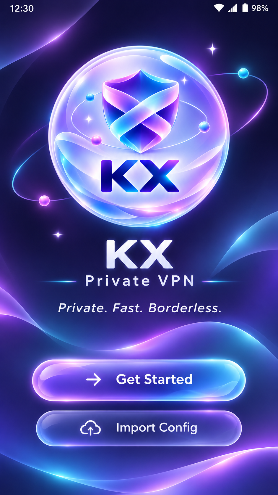

All Android PNGs below were produced by instrumentation on API26 at commit 3f8d472f585eda6e799aecbc1b4e94601e2fb8a7, not design mockups. All seven instrumented tests passed on that API. The approved source is unchanged. This page is QA evidence, not an Android screen or a replacement design.
Approved Welcome ↔ native identity preview

Approved Welcome, 941×1672. Visual authority.Actual native preview. Shared orb and native controls; full TASK_01 onboarding and its two actions are absent.
Final identity uses the exact original logo bytes; native formation has simplified optical geometry and shows a proportion mismatch during crossfade. A later code change adjusts native shield proportions; new capture review is required.
The background lacks the approved image's layered reflections, controlled bloom and volumetric depth. Button surface and typography remain less faithful. This is not approved visual parity.
The intro and Welcome share one stationary orb; no replacement screen or WebView is used. Skip, reduced motion, persistence and lifecycle are tested separately.
Arabic large-text testing found a separate dialog-window locale fallback. The fix passed on API26; the actual Arabic dialog capture was inspected and shows Arabic copy.
Software-GPU startup profiling failed the 60fps target. Hardware runtime/performance and TalkBack manual review remain unverified.